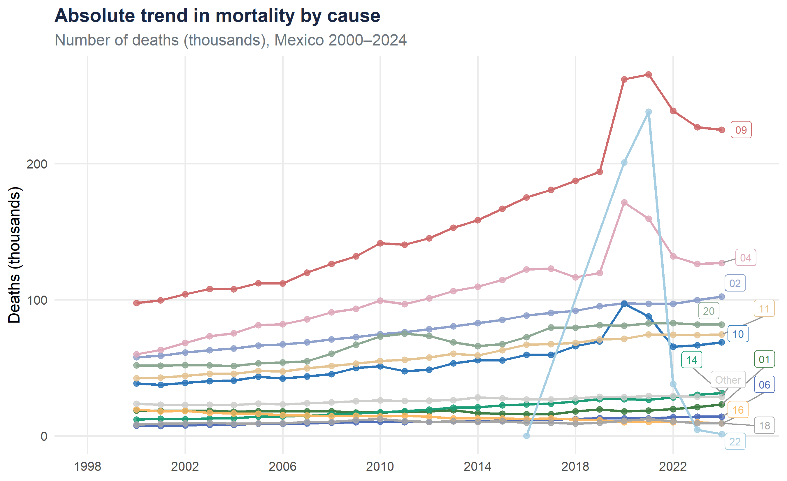
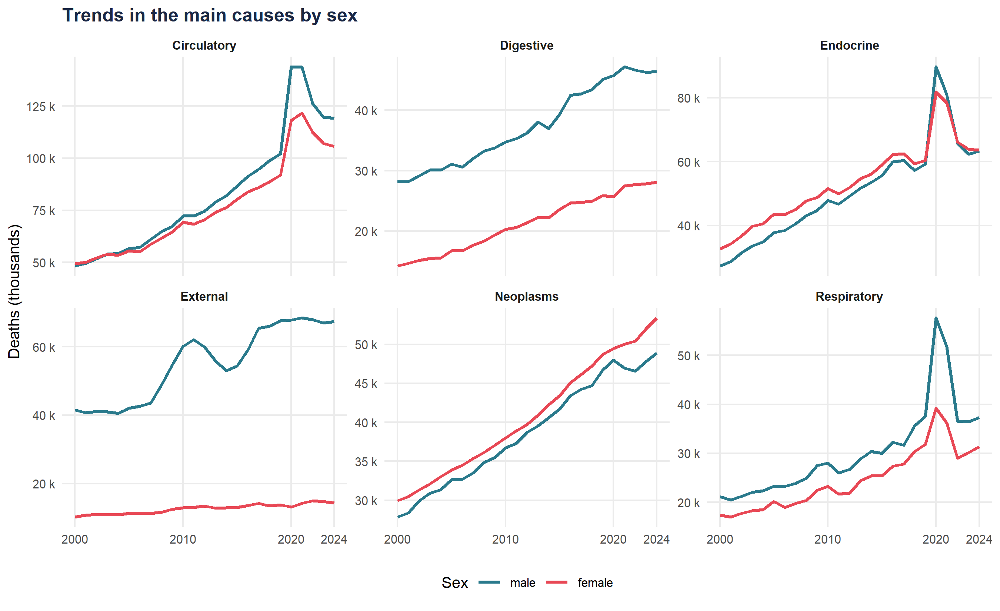
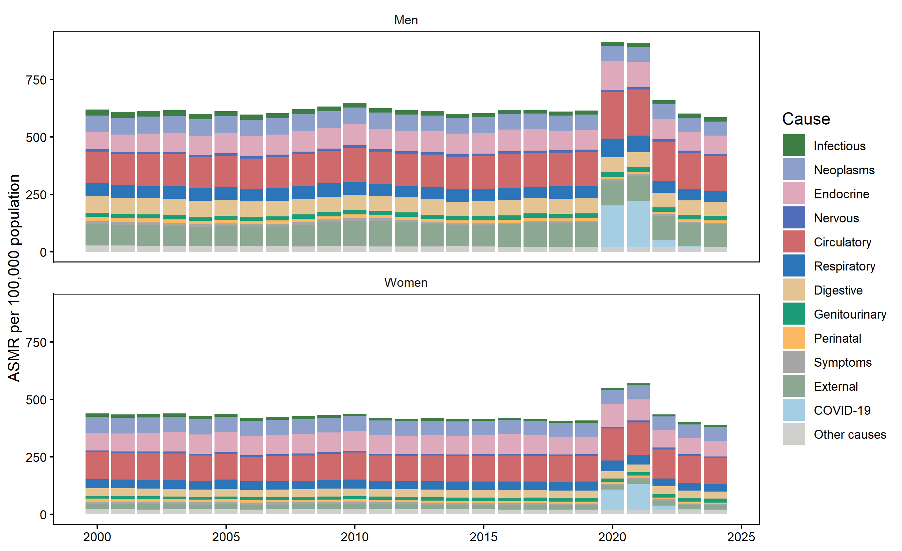
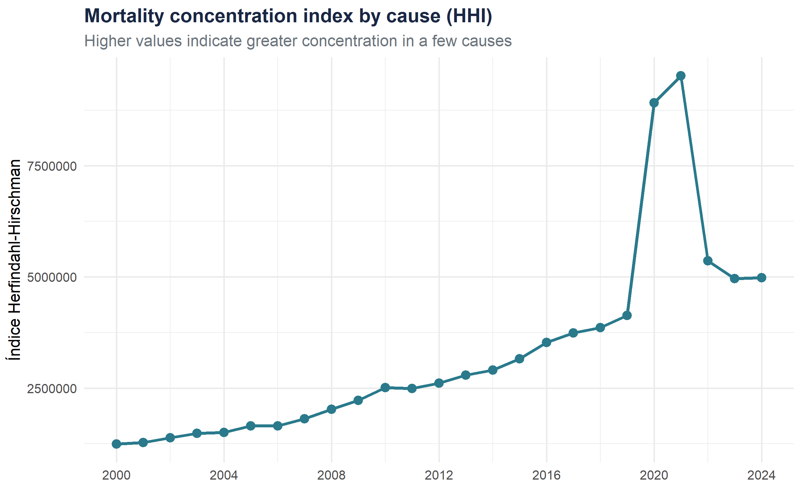

2- Disaggregation by cause of death
Bloc A · Level 2 — Epidemiological transitions in Mexico, 2000–2024
Bloque A · Nivel 2 Variables : year · sex · cause
Introduction
Incorporating cause of death as an analytical dimension makes it possible to identify the major epidemiological transitions characterizing Mexico’s health trends over the last three decades.
At this level, the aim is to answer three key questions:
- Which diseases account for the greatest mortality burden?
- How has the composition by cause evolved over time?
- Are there gender differences in cause-specific patterns?
Tip
Link to the previous level
Nivel 1 — General description establishes the mortality trends. Here, we add the causal dimension to explain those trends.
Vue d’ensemble : composition de la mortalité
Évolution de la structure par cause

| Cause | 2000 | 2005 | 2010 | 2015 | 2019 | 2024 |
|---|---|---|---|---|---|---|
| 9- Diseases of the circulatory system | 97,579 | 112,189 | 141,515 | 166,773 | 261,900 | 224,876 |
| 4- Endocrine, nutritional, and metabolic diseases | 60,023 | 81,393 | 99,461 | 114,619 | 171,422 | 126,955 |
| 2- Tumors (neoplasms) | 57,749 | 66,480 | 74,761 | 85,165 | 97,472 | 102,306 |
| 20- External causes of morbidity and mortality | 51,744 | 53,328 | 73,072 | 67,457 | 81,013 | 81,809 |
| 11- Diseases of the digestive system | 42,343 | 47,801 | 55,044 | 62,949 | 71,416 | 74,464 |
| 10- Diseases of the respiratory system | 38,525 | 43,452 | 51,301 | 55,381 | 96,896 | 68,708 |
| 14- Diseases of the genitourinary system | 11,950 | 14,277 | 17,350 | 22,503 | 26,918 | 31,600 |
| 1- Certain infectious and parasitic diseases | 18,648 | 18,273 | 17,164 | 16,222 | 17,924 | 23,242 |
| 6- Diseases of the nervous system | 7,444 | 9,132 | 10,436 | 11,368 | 12,992 | 14,122 |
| 16- Conditions originating in the perinatal period | 19,465 | 16,421 | 14,340 | 12,941 | 10,054 | 9,280 |
| 18- Symptoms, signs, and abnormal clinical and laboratory findings | 8,468 | 9,281 | 12,528 | 10,787 | 11,153 | 9,251 |
| 22- COVID-19 | NA | NA | NA | NA | 200,805 | 1,359 |
Standardized mortality rates (SMRs)
SMRs by cause, sex, and year

| Causes | 2000 | 2005 | 2010 | 2015 | 2019 | 2024 |
|---|---|---|---|---|---|---|
| Circulatory | 136.3 | 135.7 | 146.8 | 145.0 | 147.0 | 150.5 |
| External | 94.0 | 86.6 | 111.2 | 90.8 | 106.1 | 99.2 |
| Endocrine | 73.4 | 86.9 | 93.8 | 91.0 | 84.3 | 79.4 |
| Neoplasms | 73.8 | 74.3 | 71.7 | 68.5 | 67.1 | 62.1 |
| Digestive | 73.4 | 69.9 | 67.0 | 64.5 | 65.5 | 60.1 |
| Respiratory | 57.7 | 55.5 | 57.3 | 50.8 | 54.7 | 47.9 |
| Genitourinary | 17.6 | 18.7 | 19.0 | 19.9 | 20.5 | 20.6 |
| Infectious | 26.2 | 22.9 | 19.7 | 16.6 | 18.2 | 19.1 |
| Nervous | 9.7 | 10.6 | 10.8 | 10.4 | 10.8 | 10.5 |
| Perinatal | 17.9 | 15.2 | 13.3 | 12.3 | 11.5 | 9.6 |
| Causes | 2000 | 2005 | 2010 | 2015 | 2019 | 2024 |
|---|---|---|---|---|---|---|
| Circulatory | 117.5 | 111.7 | 116.6 | 111.7 | 110.9 | 110.8 |
| Endocrine | 76.5 | 86.8 | 86.6 | 82.9 | 74.3 | 67.8 |
| Neoplasms | 69.5 | 67.2 | 64.1 | 62.3 | 61.9 | 59.6 |
| Respiratory | 39.6 | 40.0 | 39.2 | 35.7 | 39.3 | 34.0 |
| Digestive | 33.2 | 33.2 | 34.1 | 33.4 | 32.1 | 30.5 |
| External | 21.3 | 21.4 | 21.8 | 20.0 | 19.8 | 19.5 |
| Genitourinary | 12.9 | 12.6 | 13.3 | 15.0 | 15.9 | 16.8 |
| Infectious | 15.5 | 14.0 | 11.3 | 9.3 | 10.2 | 11.3 |
| Nervous | 7.1 | 8.0 | 8.0 | 7.5 | 7.9 | 7.7 |
| Perinatal | 13.3 | 11.6 | 10.1 | 9.6 | 8.9 | 7.4 |
Concentration indicators
